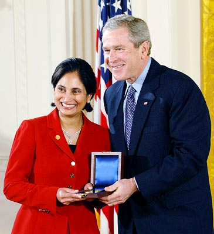

Message from Padmasree
"My education paved the way to my destination of achievement. Growing up in a small town in India, I never dreamed that I would some day lead technology for a Fortune 500 global technology corporation. Well, dreams don’t bring success; hard work, dedication and perseverance do. Now it’s my time to give the gift of education to those in need. I am deeply grateful to the ASSOCHAM Ladies League in Technology Innovation, for partnering with me to help someone deserving to reach new pinnacles of success."
About Padmasree
Padmasree Warrior is the Chief Technology & Strategy Officer (CTSO) of Cisco Systems, and the former Chief Technology Officer of Motorola, Inc.
Personal
Warrior was born and raised in the city of Vijayawada in the southern state of Andhra Pradesh, India. She went to school at the Children’s Montessori School and Maris Stella College in Vijayawada. Warrior received a bachelor’s degree in chemical engineering from the Indian Institute of Technology, New Delhi in 1982. She holds masters in chemical engineering from Cornell University. Padmasree and her husband of 30 years, Mohan Warrior live in California. Their son, Karna Warrior is a student at the University of Illinois.
Career
As the Chief Technology & Strategy Officer Padmasree Warrior is charged with aligning technology development and corporate strategy to enable Cisco to anticipate, shape, and lead major market transitions. She helps direct technology and operational innovation across the company and oversees strategic partnerships, mergers and acquisitions, the integration of new business models, the incubation of new technologies, and the cultivation of world-class technical talent.
In her previous role, Warrior served as Chief Technology Officer (CTO) and also co-led Cisco's worldwide engineering organization. As Senior Vice President, Engineering, she was responsible for core switching, collaboration, cloud computing and data center/virtualization, security, and architectures for business transformation.
Prior to joining Cisco, warrior served as the Executive Vice President and Chief Technology Officer of Motorola Corporation. During Warrior’s tenure as CTO, the President of the United States awarded the 2004 National Medal of Technology to Motorola, the first time the company had received this honor.
Warrior joined Motorola in 1984, as one of only a few women in its semiconductor manufacturing facility in Arizona, USA. Over the course of her career at Motorola she served in a broad range of roles, including Corporate Vice President and Chief Technology Officer of Motorola Semiconductor Products Sector and Corporate Vice President and General Manager of Motorola Energy Systems Group.
Recognition
Warrior has been widely recognized for her creative, visionary leadership. Forbes has named her one of "The World's 100 Most Powerful Women" for two years running. In 2013, The International Alliance for Women gave her the World of Difference Award, Silicon Valley's SVForum honored her with the Visionary Award, the American Society of Engineers of Indian Origin gave her the Excellence in Engineering, Science and Technology Award, and the International Museum of Women presented her with the Innovator Award for Women in Technology.
In 2012, Business Insider called her one of the "25 Most Influential Women in Wireless," the Aspen Institute gave her the first Leadership in Science and Technology Award, India's National Association of Software & Service Companies named her the Global CTO Award winner, and CloudNOW recognized her with the first Top 10 Women in Cloud Award. The Wall Street Journal has called Warrior one of "50 Women to Watch," Fast Company included her among the "100 Most Creative People in Business," and The Economic Times listed her as "the 11th Most Influential Global Indian." Warrior was recently Awarded ASSOCHAM Ladies League, Hyderabad Women of the Decade Achievers Award for Excellence in Technology Innovation.
Directorships
Warrior has served on government initiatives, industry advisory boards, and charitable and community organizations. She received the United States Pan Asian American Chamber of Commerce's Excellence Award and YWCA Metropolitan Chicago's Outstanding Woman of Achievement Award. In 2007 she was inducted into the Women in Information Technology International Hall of Fame. She is a member of the Board of Trustees for Cornell University and serves on the Box Board of Directors for Gap Inc and BOX. She also sits on the Board of Directors for Thorn (formerly DNA Foundation).
The Padmasree Warrior University Scholarship
In March 2014, the ASSOCHAM Ladies League in Technology Innovation honored Padmasree with the “Hyderabad Woman of the Decade” award. As part of the award, Rai University instituted the “Padmasree Warrior University Scholarship” for an underprivileged girl nominated by Padmasree every year. This scholarship was instituted in association with Rai Foundation, which is committed to providing access to quality education, with a special outreach to the underprivileged youth. To view the other distinguished scholarships instituted by the Rai foundation, please go to raifoundation.org
The scholarship covers university education at the undergraduate or graduate level (see form – link to downloadable PDF) at Rai University including boarding and lodging for the full term of her study – 3 or 4 years as appropriate. Rai University has locations in Ahmadabad, Ranchi, Bangalore (Rai Technology University), Sikkim (EIILM University) and Kaithal, Haryana (NIILM University).
In the event, the recipient cannot do an on-campus program, they can apply to one of the massive online programs for underprivileged youth from SC/ST, minorities and marginalized sections.
The Scholarships for underprivileged girls have so far benefitted over 2000 girls from India and 22 countries in Asia and Africa. These girls get to study and live in a supportive and inspirational environment alongside other students who come from similar backgrounds. Moreover, the university also conducts special classes for their overall development such as in English Communication and Creative Life Skills classes, as these are crucial for progress in industry. Today, many of these scholarship recipients are working with leading companies and are supported by the ASSOCHAM Ladies League as well.
Padmasree and her family look forward to personally interacting with the Padmasree Warrior University Scholarship winners and in guiding and mentoring them.
The application form is attached below. Please download and complete the form. You can attach additional pages if required to completely answer the questions. Please scan the form along with the supporting documents (on page 2) and email to apply@padmasreewarrior.org